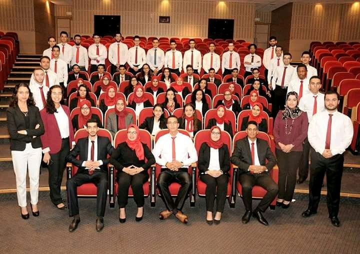
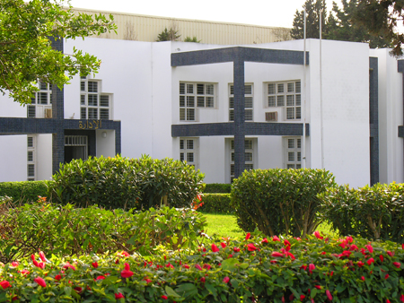
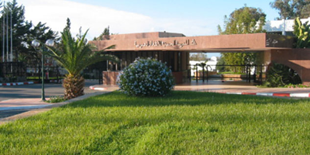

<div class="container spacer">
  <div class="spacer">
    <h2 style="text-align: center">
      Notre association
    </h2>
    <br>
    <div class="container">
      <mat-tab-group style="text-align: center">
        <mat-tab label="Année de création">
          
          <p style="color: #0e3260">
            Fondée à Casablanca en 2018
          </p>
        </mat-tab>
        <mat-tab label="Capital Humain">
          
          <p style="color: #0e3260">
            L'association regroupe tous les lauréats du cycle ingénieur de l'EHTP.
          </p>
        </mat-tab>
        <mat-tab label="Objectifs">
          
          <p style="color: #0e3260">
            Elle a pour principale mission de maintenir et de créer des liens entre les anciens Elèves Ingénieurs de l'école
          </p>
        </mat-tab>
      </mat-tab-group>
    </div>

    <div class="container">
      <h2 style="text-align: center">
        Contactez Nous
      </h2>
      <br>

      <mat-tab-group headerPosition="below" style="text-align: center">
        <mat-tab label="Adresse"> Km 7 Route d'El Jadida، Dar-el-Beida</mat-tab>
        <mat-tab label="Téléphone"> +212618665813 </mat-tab>
        <mat-tab label="e-mail"> abdelkabir.watil@gmail.com </mat-tab>
      </mat-tab-group>
    </div>

    <div class="footer">
      <p>2018 Association des ingénieurs de l'Ecole Hassania des Travaux Publics - Tous Droits Réservés</p>
    </div>

  </div>
</div>
